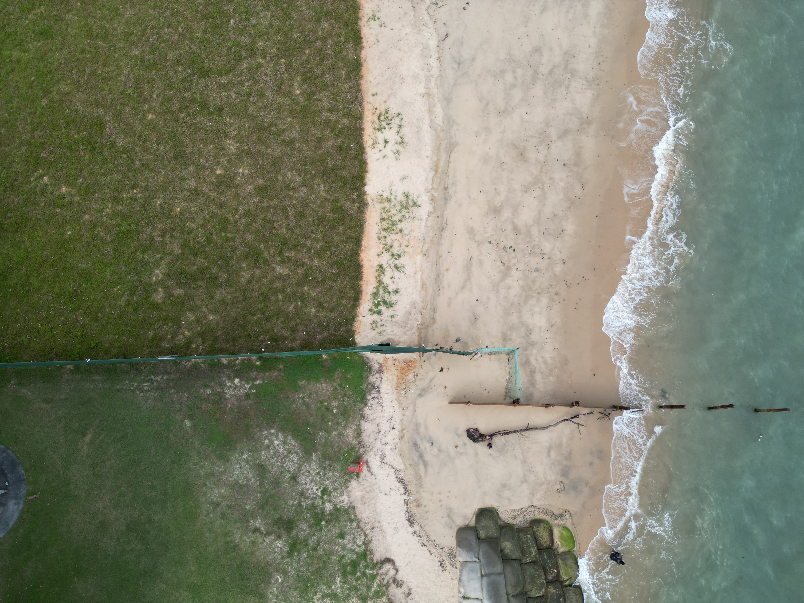
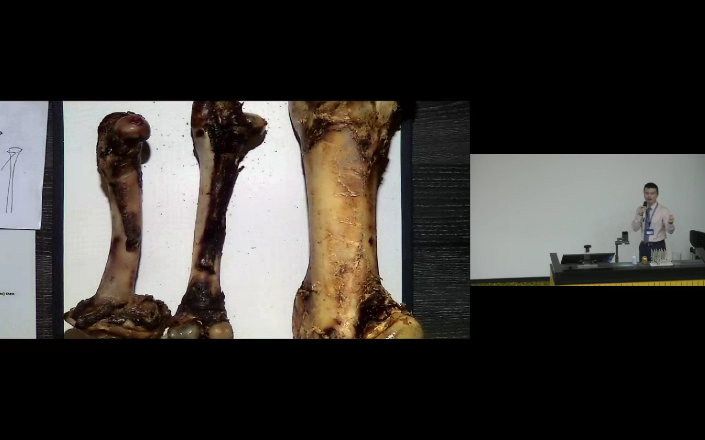
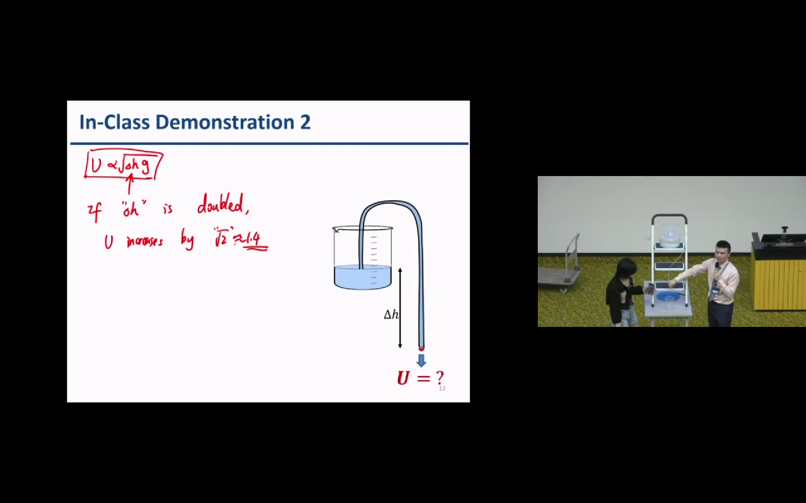
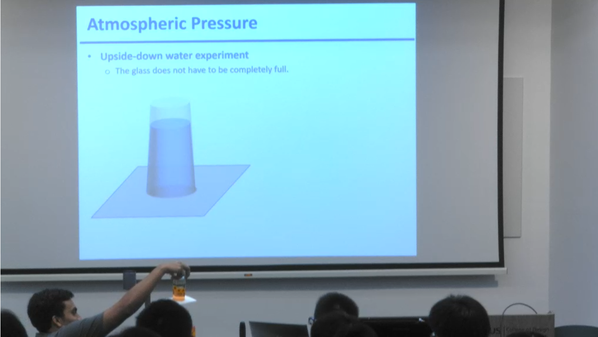
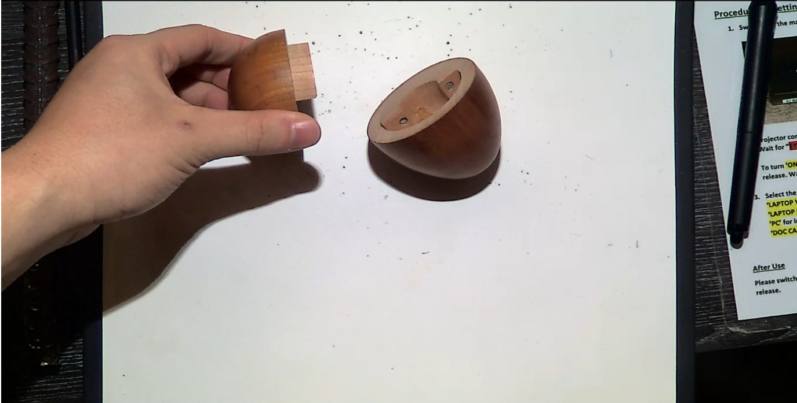
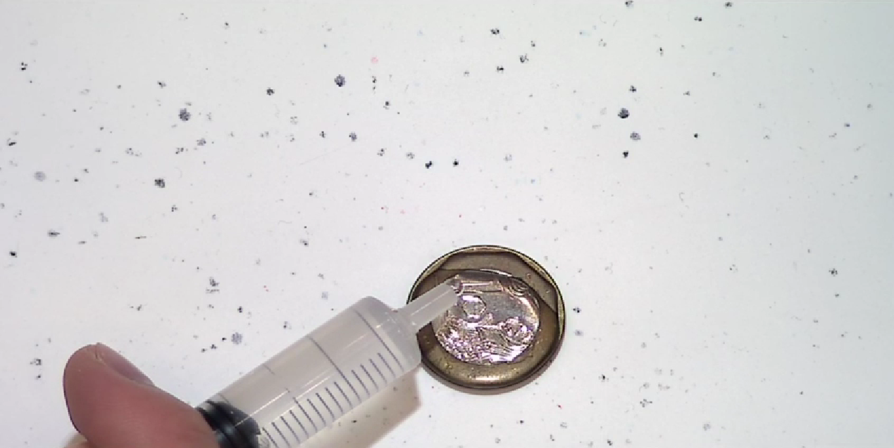
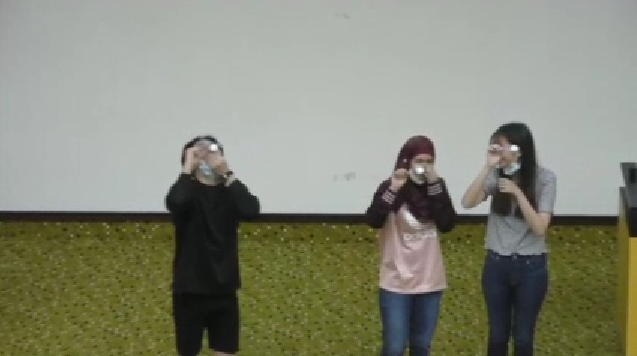

AI‑Assisted Interactive Games / Interactive Platforms
for CE2134
Fluid Mechanics
the digital component of my integrated experiential learning
Assistant Professor Lei Jiarui, Gary
Civil and Environmental Engineering
National University of Singapore
September 2026
Motivation & My Approach
Experiential learning!
Physical + Digital
(2022 onwards)
(2025 onwards)







Three assignments, three views of learning
Sources: S1–S4
110
distinct Canvas IDs
323 submissions
103 IDs represented
in all three assignments
PSet 1 — Response checking
109 assessable submissions
API tutor vs rule-based replies
PSet 2 — Confidence
47 confidence pairs / 106 submissions
Same assignment in both groups
PSet 3 — Quiz practice
155 quiz attempts / 35 browser IDs
Optional chat and quiz practice
PSet 1: Stronger response checking
Sources: S1, S4 | Differences use unrounded means | CI = confidence interval
+0.28 /2
API tutor vs
rule-based replies
95% CI +0.06 to +0.50
Overall score /24
22.12 vs 21.87
Quality of the written check (score /2)
Checks used equations, units, limiting cases
or graph-based reasoning.
PSet 2: Confidence increased
Sources: S2, S4 | Paired self-reported confidence on a 1–5 scale
+0.31 /5
47 comparable pairs
106 submissions
95% CI
+0.06 to +0.56
4.06
4.37
Initial task
Transfer task
Number of paired records
PSet 3: Quiz results depend on weighting
Sources: S3, S4 | pp = percentage points | Whole-ID bootstrap intervals
155 quiz attempts
35 browser IDs
Repeated attempts
change the comparison.
All three 95% intervals
include zero.
Accuracy difference (percentage points)
−40
−20
0
+20
+40
All attempts
+20.4 pp
Every ID weighted equally
−11.7 pp
Exclude three rapid-answer IDs
−0.5 pp
Any recorded reply − no matched reply
PSet 3: Clarification and answer correction
Sources: S3, S4 | Selected dialogue cases, paraphrased
A logged pipe-flow correction over approximately nine minutes
Initial answer
1.2 m/s
125.5 kPa
AI feedback
Continuity
+ Bernoulli
Velocity supplied
Revised answer
2.7 m/s
122.575 kPa
Method clarification
A correct Pitot response followed
clarification of the method.
Numerical consistency
116.6 kPa was rejected, then
116.625 kPa was calculated.
Teaching design and next evaluation
Source: Concise report, Section 4 | Proposed evaluation design
Teaching design
Commit before feedback.
Check the governing physics.
Explain the revision.
Evaluation
Link first answers and revisions.
Test a common unaided task.
Measure delayed retention.
Compare confidence with correctness
on the same item.
Next comparison: Rule-based | Conversational AI | Verification-first AI
Take-home message
Sources: S1–S4 | QR code: supplied teaching presentation
Stronger response checking
Confidence increased by 0.31 /5
Clarification and answer correction
Q & A
GitHub repositories
Make students predict, check and explain.
Then test their reasoning on a new problem.